This page contains recipes for the Pie Chart category.
Visit the Cookbook Home Page to view all cookbook recipes.
Visit the Cookbook Home Page to view all cookbook recipes.
Pie Chart
A pie chart illustrates numerical proportions as slices of a circle.
var plt = new ScottPlot.Plot(600, 400);
double[] values = { 778, 283, 184, 76, 43 };
plt.AddPie(values);
plt.SaveFig("pie_quickstart.png");
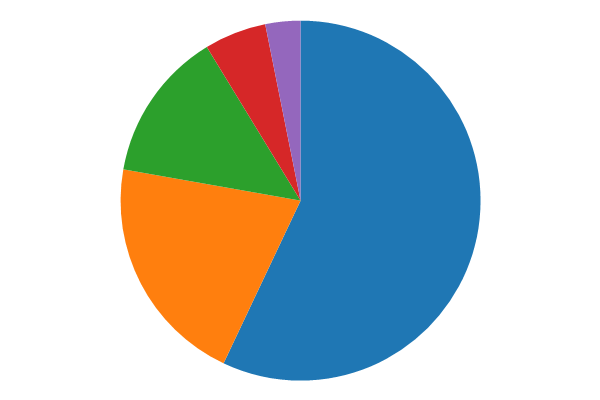
Exploded Pie Chart
Exploded pie charts have a bit of space between their slices.
var plt = new ScottPlot.Plot(600, 400);
double[] values = { 778, 283, 184, 76, 43 };
var pie = plt.AddPie(values);
pie.Explode = true;
plt.SaveFig("pie_exploded.png");
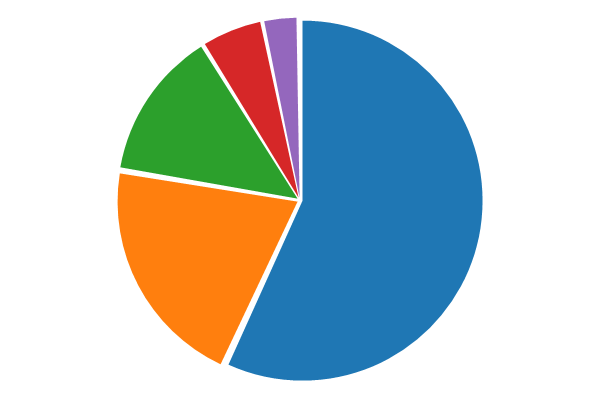
Donut Chart
Donut plots are pie charts with a hollow center.
var plt = new ScottPlot.Plot(600, 400);
double[] values = { 778, 283, 184, 76, 43 };
var pie = plt.AddPie(values);
pie.Explode = true;
pie.DonutSize = .6;
plt.SaveFig("pie_donut.png");
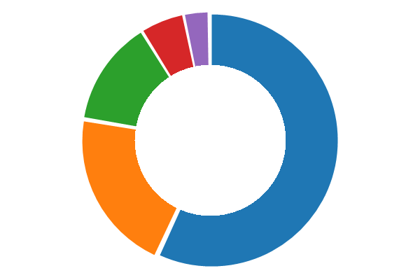
Donut with Text
Custom text can be displayed in the center of a donut chart. Notice too how the colors of each slice are customized in this example.
var plt = new ScottPlot.Plot(600, 400);
double[] values = { 779, 586 };
string centerText = $"{values[0] / values.Sum() * 100:00.0}%";
Color color1 = Color.FromArgb(255, 0, 150, 200);
Color color2 = Color.FromArgb(100, 0, 150, 200);
var pie = plt.AddPie(values);
pie.DonutSize = .6;
pie.DonutLabel = centerText;
pie.CenterFont.Color = color1;
pie.OutlineSize = 2;
pie.SliceFillColors = new Color[] { color1, color2 };
plt.SaveFig("pie_donutText.png");
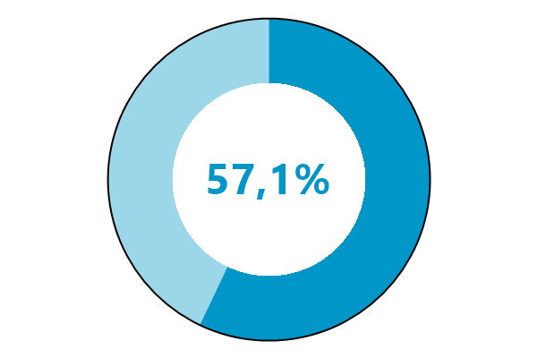
Slice Values
The value of each slice can be displayed at its center.
var plt = new ScottPlot.Plot(600, 400);
double[] values = { 778, 43, 283, 76, 184 };
var pie = plt.AddPie(values);
pie.ShowValues = true;
plt.SaveFig("pie_showValues.png");
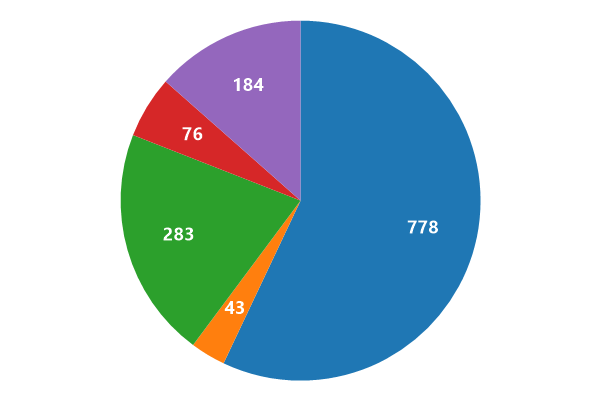
Slice Percentages
The percentage of each slice can be displayed at its center.
var plt = new ScottPlot.Plot(600, 400);
double[] values = { 778, 43, 283, 76, 184 };
var pie = plt.AddPie(values);
pie.ShowPercentages = true;
plt.SaveFig("pie_showPercentage.png");
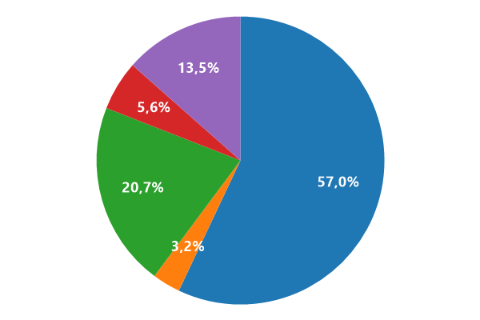
Customize Pie Colors
Colors for pie slices and labels can be customized.
var plt = new ScottPlot.Plot(600, 400);
double[] values = { 778, 43, 283, 76, 184 };
string[] labels = { "C#", "JAVA", "Python", "F#", "PHP" };
// Language colors from https://github.com/ozh/github-colors
Color[] sliceColors =
{
ColorTranslator.FromHtml("#178600"),
ColorTranslator.FromHtml("#B07219"),
ColorTranslator.FromHtml("#3572A5"),
ColorTranslator.FromHtml("#B845FC"),
ColorTranslator.FromHtml("#4F5D95"),
};
// Show labels using different transparencies
Color[] labelColors =
new Color[] {
Color.FromArgb(255, Color.White),
Color.FromArgb(100, Color.White),
Color.FromArgb(250, Color.White),
Color.FromArgb(150, Color.White),
Color.FromArgb(200, Color.White),
};
var pie = plt.AddPie(values);
pie.SliceLabels = labels;
pie.ShowLabels = true;
pie.SliceFillColors = sliceColors;
pie.SliceLabelColors = labelColors;
plt.SaveFig("pie_customColors.png");
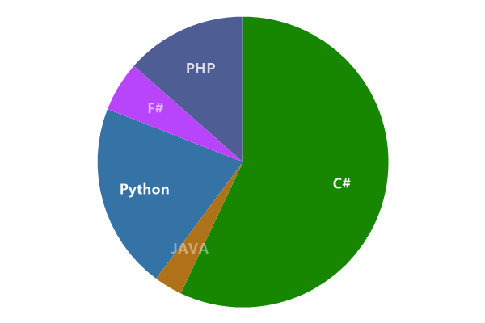
Customize Pie Hatching
Hatching (patterns) for pie slices and labels can be customized.
var plt = new ScottPlot.Plot(600, 400);
double[] values = { 778, 43, 283, 76, 184 };
string[] labels = { "C#", "JAVA", "Python", "F#", "PHP" };
var pie = plt.AddPie(values);
pie.HatchOptions = new HatchOptions[] {
new () { Pattern = HatchStyle.StripedUpwardDiagonal, Color = Color.FromArgb(100, Color.Gray) },
new () { Pattern = HatchStyle.StripedDownwardDiagonal, Color = Color.FromArgb(100, Color.Gray) },
new () { Pattern = HatchStyle.LargeCheckerBoard, Color = Color.FromArgb(100, Color.Gray) },
new () { Pattern = HatchStyle.SmallCheckerBoard, Color = Color.FromArgb(100, Color.Gray) },
new () { Pattern = HatchStyle.LargeGrid, Color = Color.FromArgb(100, Color.Gray) },
};
pie.OutlineSize = 1;
pie.SliceLabels = labels;
plt.Legend();
plt.SaveFig("pie_customHatch.png");
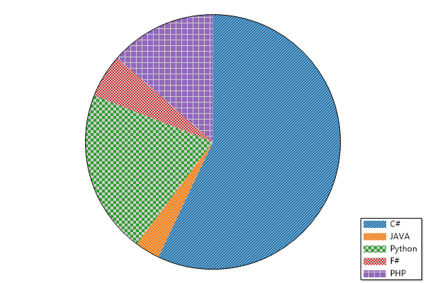
Slices in Legend
Slices can be labeled in the legend.
var plt = new ScottPlot.Plot(600, 400);
double[] values = { 778, 43, 283, 76, 184 };
string[] labels = { "C#", "JAVA", "Python", "F#", "PHP" };
var pie = plt.AddPie(values);
pie.SliceLabels = labels;
plt.Legend();
plt.SaveFig("pie_legend.png");
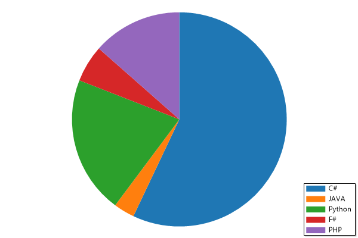
Label Everything
Slices can labeled with values, percentages, and lables, with a legend.
var plt = new ScottPlot.Plot(600, 400);
double[] values = { 778, 43, 283, 76, 184 };
string[] labels = { "C#", "JAVA", "Python", "F#", "PHP" };
var pie = plt.AddPie(values);
pie.SliceLabels = labels;
pie.ShowPercentages = true;
pie.ShowValues = true;
pie.ShowLabels = true;
plt.Legend();
plt.SaveFig("pie_showEverything.png");
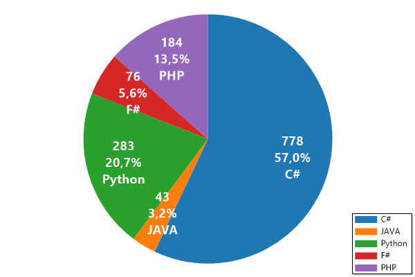
Custom Slice Labels
Custom slice labels can be used to display values using custom formats
var plt = new ScottPlot.Plot(600, 400);
double[] values = { 778, 43, 283, 76, 184 };
string[] labels = { "C#", "JAVA", "Python", "F#", "PHP" };
// modify labels to include a custom formatted value
labels = Enumerable.Range(0, values.Length)
.Select(i => $"{labels[i]}\n({values[i]})")
.ToArray();
var pie = plt.AddPie(values);
pie.SliceLabels = labels;
pie.ShowLabels = true;
plt.SaveFig("pie_customLabels.png");
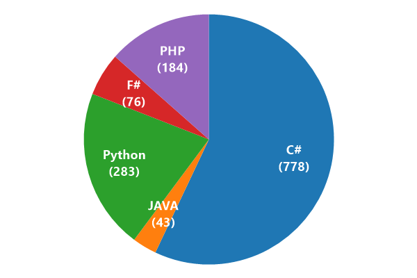
Custom Size
You can define the size of the pie to make room for large labels.
var plt = new ScottPlot.Plot(600, 400);
plt.Title("Really\nLarge\nTitle");
double[] values = { 778, 283, 184, 76, 43 };
var pie = plt.AddPie(values);
pie.Size = .6; // size of the pie (default is .9)
plt.SaveFig("pie_size.png");
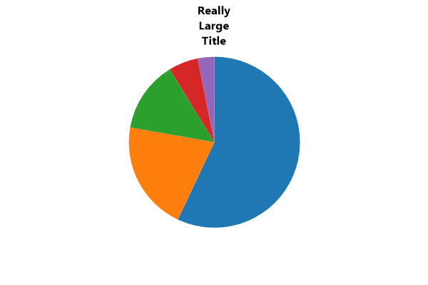
Custom Legend Labels
Labels for slices and legend items can be independently configured.
var plt = new ScottPlot.Plot(600, 400);
double[] values = { 778, 43, 283, 76, 184 };
string[] SliceLabels = { "Cat", "Dog", "Snake", "Frog", "Fox" };
string[] LegendLabels = { "Meow", "Woof", "Ssst", "Ribbit", "RingDing" };
var pie = plt.AddPie(values);
pie.SliceLabels = SliceLabels;
pie.ShowLabels = true;
pie.LegendLabels = LegendLabels;
plt.Legend();
plt.SaveFig("pie_custom_legend_labels.png");
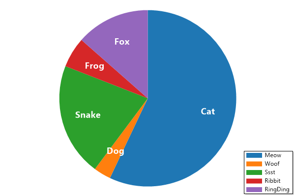